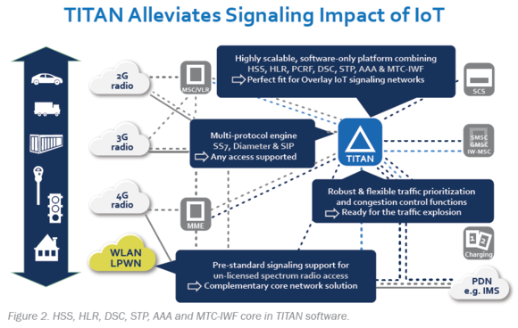
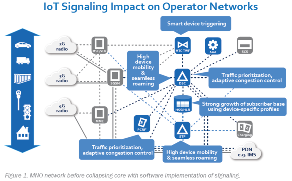

Python_Programming
사물인터넷(IoT)를 둘러싼 과대 광고와 과장된 점 때문에 통신 사업자들에 의해서 약간 회의적으로 비춰졌습니다만, 현재의 각종 수치는 IoT 업체, 네트워크 사업자,
통신 사업자 및 서비스 제공 업체에게 큰 미래와 시장 기회를 보여 주고 있습니다. 하지만, 통신 사업자는 스스로에게 질문해야 합니다. 무엇이 과대 광고 이고, 무엇이 실제인지?
온-프레미스 IoT(LAN/WAN 유선, 무선 WiFi 네트워크로 연결된 스마트 기기)는 이미 현장 제조 제어, 물리적 구내 보안 및 홈오토메이션 분야에서 혁명을 일으키고 있습니다.
현재, IoT M2M 인터페이스와 현지화 된 IoT (Bluetooth Mesh /, Z-Wave, ZigBee 등)를 위한 양방향 프로토콜이 혼재되어 있지만, 이러한 짧은 거리, 온-사이트 프로토콜 및
"사물"은 여러해를 걸쳐 IoT 시장에서 기회를 잡지 못했습니다. 온-프레미스 기기들이 프로토콜의 복잡한 배열에도 불구하고 지속 성장하고 있지만,
장거리 통신이 요구되는 IoT 장치들이 셀룰라 네트워크를 사용하는 것에 대해서는 의심하지 않을 겁니다. 셀룰라 네트워크는 이미 구축되어 있고, 즉시 사용할 수 있으며,
많은 IoT 시나리오에서 사용할 수 있는 최상의 솔루션입니다. 이미 시장에서 장거리 IoT 통신에 대한 요구는 이미 매우 많습니다.
Distance IoT and Cellular Networks
벤더들은 셀룰러 네트워크를 사용하는 장거리 IoT 통신을 위한 상호 운용성 협력 및 해당 솔루션을 제공하기 시작했습니다. 실제로 주요 셀룰러 제공 업체인 에릭슨(Ericsson)은
2021년까지 모든 셀 트래픽의 10%가 IoT 기반이 될 것으로 예상합니다. 또한 에릭스 모빌리티보고서는 IoT 장치가 2018년까지 휴대 전화보다 많은 수를 차지할 것이라고 했습니다.
장거리 IoT 성장을 주도하고 있는 주요 시장은 다음과 같습니다.
Automotive and Transportation
2020년까지 커넥티드 차량과 트럭이 2.2억대를 넘어 설 것으로 예상됩니다. 2016년 현재커넥티드 차량의 연결 수익은 400억 유로에 불과하며 2021년 이전에는 시장 규모가 1,500억 유로 미만에 이를 것으로 예상됩니다.
"IoT 기술 조합은 스마트 시티의 도시 관리자와 교통 코디네이터가 실시간 정보를 기반으로 안전과 교통 흐름을 개선하기 위한 제안을 할 수 있도록 설계되었습니다." informationweek
Utilities and Energy
에너지분야의 유틸리티 제공 업체는 2020년까지 1억 대의 IoT 장치를 설치하게 될 것입니다. 한편, 에너지 회사는 추출 사이트에만 540만개 이상의 IoT 장치를 설치해야 합니다.
Healthcare
약 6.46억대의 IoT 장치가 2020년까지 헬스케어 시설에서 사용될 것으로 예상됩니다.일부 장치는 로컬에 설치될 수 있지만 데이터를 분석하고 프로세스를 자동화하며 위성 클리닉과
연구실을 연결하려면 장거리 통신이 필요합니다.
향후 5~10 년 동안 IoT에 대한 막대한 투자를 하는 다른 산업 분야로는 농업, 주 및 지방 정부, 국방, 소매업 및 서비스업이 포함됩니다. 총 2020년까지 IoT 시장 규모는 6조 달러 투자가 예상됩니다.
사실상 모든 것은 네트워크 운영자 기반의 IoT 통신의 어떤 형태를 필요로 할 것입니다.
자동차, 운송 및 에너지는 네트워크 트래픽을 유발하는 IoT 시장입니다.
Automotive and Transportation
자동차 및 운송 IoT는 특히 장거리 통신에 의존적입니다. 모바일 칩셋이 내장된 자동차 및 트럭은 위치, 속도 및 도로 상태를 정기적으로 통신합니다. 전 세계적으로
이미 대략 2,300만대의 커넥티드 자동차가 있고, 전통적인 LTE 지원 자동차에서 실험용 자율운행 트럭과 자동차까지 다양합니다. 모두 어떤 종류의 캐리어-커넥티드 IoT 장치가 필요합니다.
그러나 요즘 자동차는 40 개 이상의 마이크로 프로세서와 센서를 통해 매 시간 약 25GB의 데이터를 생성합니다. 데이터를 활용하고 더 큰 IoT 셀 트래픽을 생성하는 새로운 특징 및 기능은 다음과 같습니다:
- 구성 요소 상태, 운전자 행동, 차량 성능의 실시간 분석
- 스트리밍 미디어 및 인포테인먼트의 광범위한 채택
- 자율주행 및 항법
트럭 트래픽은 이미 시간을 줄이고 마모를 줄이며 운전자 안전을 높이기 위해 차량 간 및 데이터 센터 통신을 더 많이 수행하고 있습니다.
Utilities and Energy
Utilities, 특히 도시의 전기 회사들은 수년간 SCADA(Supervisory Command and Data Acquisition) 시스템을 통해 셀룰러 및 사설 무선 IoT 장치를 사용해 왔습니다.
이러한 셀 지원 장치는 시스템 상태를 모니터링하고 중앙 명령 사이트에서 회로를 열고 닫는 데 사용할 수 있습니다. 더 큰 IoT 기술이 유틸리티에 의해 채택됨에 따라 셀룰러 기반 통신은 다음과 같이 사용될 수 있습니다:
- 비즈니스 및 가정용 에너지 사용 원격 측정
- 변전소 에너지 분배 점의 모니터링, 명령, 제어 및 보안
- 태양열 및 풍력 발전과 같은 분산 형 에너지 생성 시스템의 제어, 모니터링 및 명령
IoT를 이용한 실시간 계량은 유틸리티가 수요 및 최대 사용을 추적하는 훨씬 더 나은 방법을 제공합니다. IoT를 통해 변전소 분배 및 보안 문제를 해결하면 시간을 절약하고
값 비싼 부품을 보호하며 시스템 전체의 신뢰성을 높일 수 있습니다. 태양 에너지 및 풍력 에너지 생산량의 증가와 관련된 발전 요소의 수가 증가함에 따라
대체 에너지 현장의 IoT 장치는 유지 보수, 진단 및 원격 시스템 종료 및 시동을 위해 영향을 받는 장치의 정밀하고 정확한 GIS 정밀도를 제공합니다.
Energy 생산 업체, 특히 천연 가스 및 석유 생산 현장은 이미 각 위치에 수만 개의 센서가 설치되어 있지만 1%만 사용됩니다. 많은 사람들이 사설 셀룰러 통신 네트워크,
특히 원격장치및 추출 사이트에 대한 정보를 보고합니다. 그러나 주로 문제를 진단하고 보고하는 데 사용됩니다.
하지만 차세대 양방향 IoT 장치는 효율성을 높인 명령 및 제어 기능으로 추출 및 작동을 최적화 합니다.
"[Utility] 응답자의 73%는 향후 3년이내 "고객 참여"가 IoT 지원이 가능하다고 했습니다. 연구에서 인용된 IoT 분석의 가장 일반적인 이점이 더 나은 [Utility] 고객 서비스라는 것은 놀라운 일이 아닙니다." Energy Central
셀룰러 IoT "더 먼 거리에서 작동해야 하는 모든 IoT 응용 프로그램은 GSM / 2G / 3G / 4G 셀룰러 통신 기능을 활용할 수 있습니다.
셀룰러는 특히 4G에 대해 많은 양의 데이터를 전송할 수 있지만, 많은 응용 프로그램에서 비용과 전력 소비가 너무 높을 수 있어
센서 기반의 저 대역폭 데이터 프로젝트에는 인터넷을 통해 매우 적은 양의 데이터를 전송하는 것이 이상적일 수 있습니다." Source : DesignSpark, 2015.
저전력 셀룰러 IoT 장치의 발전으로 캐리어를 통한 원격 IoT가 훨씬 매력적일 겁니다.
MNO Challenges Addressing IoT
통신 사업자는 IoT 통신 시장을 자본화 할 때 다음과 같은 몇 가지 기술적 과제에 직면합니다.
- 멀티 시그널링 프로토콜을 안정적이고 경제적으로 지원하는 방법은 무엇입니까?
- 수백만 (또는 수십억) 종점 장치를 제공하는 방법은 무엇입니까?
- 급성장하는 시장에서 노후화를 방지하는 방법은 무엇입니까?
Traditional MNO Signaling Is Not Efficient for IoT
현재 네트워크는 독립형, 기능별 하드웨어로 구축됩니다. 공급 업체가 일부 하드웨어를 가상화하고 있지만 네트워크는 IoT 서비스에 너무 비싸고 비용이 많이 듭니다.
전용 하드웨어 랙을 갖춘 전통적인 모바일 네트워크 시그널링 플랫폼은 종종 IoT 구현에서 유휴 상태가되지만, 다른 경우에는 여러 IoT 장치 사용 요청이 넘쳐납니다.
또한 IoT 구현에 따라, 멀티 시그널링 프로토콜은 네트워크 코어에 여러 개의 하드웨어 설치가 필요합니다. 각 프로토콜은 사용량의 변동을 수용하기 위해 과도하게
프로비저닝하는 코어 네트워크에서 자체 공간을 필요로합니다.
Multitude of IoT Devices Requires Greater Scale
MNO는 가입자에게 모바일 음성 및 데이터 서비스를 제공하는 것에 익숙하지만 IoT는 완전히 다른 사고 방식을 필요로합니다.
IoT는 기존의 음성/데이터 대역폭 예측 가능성보다는 오히려 스마트 계량기 또는 석유 굴착 장치 모니터와 같은 장치가 수천 가지 장치의 데이터 일괄 처리로 정기적으로
보고하기 때문에 "폭발적"인 경우가 많습니다. 이를 위해서는 여러 장치의 데이터를 한꺼번에 처리 할 수있는 모바일 인프라가 필요합니다. IoT의 산발적이고 폭발적인 특성은 현재의 하드웨어 종속 시그널링에 적합하지 않고,
특히 시그널링을 코어 시스템으로 라우트해야하는 경우 더욱 그렇습니다.
"... 근해 굴착에서 실패한 하나의 펌프가 작업을 중단시킬 수 있으며 손실 된 생산량으로 하루에 10만 달러에서 30만 달러의 비용이 발생할 수 있습니다.
이러한 상황을 피하기 위해 Rockwell Automation은 펌프의 전기 가변 속도 드라이브를 클라우드에 연결하여 수백 마일 떨어진 오하이오 주 클리브랜드에있는 회사의 명령실에서 지속적으로 모니터링 할 수 있었습니다.
"Microsoft 블로그.
Avoiding IoT Obsolescence
IoT는 현재 예측 가능한 미래의 새로운 기술이 될 것입니다. 따라서 표준, 프로토콜 및 데이터 전송 패턴은 시간이 지남에 따라 의심의 여지없이 바뀔 것입니다.
현재의 MNO 하드웨어 구현은 이러한 변경 사항을 적절하게 유지할 수 없으며, 실제로 진행을 방해 할 수 있습니다. 이러한 기술적인 과제외에도, 사업자는 또한 비즈니스 과제를 고려해야 하고, 특히,
- 애플리케이션이 다른 사람들에 의해 직접 판매 되었을때 IoT 가치 사슬에 어디에 적합 합니까 (예 : 월정액 또는 디바이스 사용)?
- 가치가 데이터 사용량과 관련이없는 경우 이러한 IoT 서비스에 대한 비즈니스 사례를 어떻게 만들 수 있습니까?
What is Needed for Operator IoT Success?
그러나 MNO는 인프라 혁신을 통해 현재 IoT 시장에 대응하고 점점 더 많은 응용 프로그램, 서비스 및 IoT 데이터가 네트워크를 통과함에 따라 선호하는 공급자로 자리 매김할 수 있습니다.
그렇게 하기 위해서는 여러 프로토콜을 제공 할 수 있고, 확장 가능하고, 성능이 뛰어날 수 있으며, 새로운 시장 요구에 신속하게 적응할 수 있는,
탄력적이고 확장 가능한 플랫폼을 통해 네트워크 운영에 대한 새로운 시도가 필요합니다.

따라서 네트워크 운영자는 다음을 제공 할 수 있는 완전히 새로운 플랫폼 아키텍처가 필요합니다:
- 수백만 또는 수십억의 원격 및 로밍 장치에 대한 서로 다른 시그널링 지원
- 확장 가능한 주문형 시그널링 서비스
- 부담스런 과다 프로비저닝이 필요없는 멀티 프로토콜, 멀티 시그널링 기능
- 멀티 테넌트, 멀티 프로토콜 트래픽을위한 포괄적인 보안
- 정확하고 중앙화된 서비스 사용량 관리 및 계량
MNO는 또한 개별 장치 사용 대신 총 사용량을 수용해야합니다. 통신 사업자는 많은 소형 센서 또는 장치에서 집계 된 마이크로 트랜잭션을 통해
대규모 데이터 덤프 통신을 추적하고 청구 할 수있는 능숙한 데이터 관리 및 분석 플랫폼이 필요합니다.
The TITAN IoT-Ready Infrastructure
NetNumber의 TITAN 플랫폼은 IoT 기능이 이미 내장 된 차세대 네트워크 서비스 플랫폼입니다. TITAN은 값 비싼 하드웨어 구성 요소가 아닌
소프트웨어를 통해 신호 및 프로토콜을 제공하기 때문에 IoT 트래픽의 고유한 네트워크 특성에 특히 적합합니다.
네트워크 시그널링 하드웨어를 제거하고 동등한 NFV 소프트웨어로 이동하면 인프라의 과도한 프로비저닝 비용이 절감되고 불규칙하면서도 수익성이 높은 통합 IoT 데이터 전송을 처리 할 때 유연성이 향상됩니다.
즉, NetNumber TITAN은 일반적인 6 프로토콜 중앙 오피스 하드웨어 구성 요소를 분산 소프트웨어 아키텍처하에 하나의 코어로 축소합니다.
Collapse the Core: Software Signaling
2G에서 LTE까지 TITAN 소프트웨어는 중앙 사무실의 특수 하드웨어 구성 요소가 아닌 엣지 기반의 고성능 서버에서 실행되는 단순한 애드온 응용 프로그램으로 모든 신호 프로토콜을 제공합니다.
현재의 구성에서도 TITAN은 기존 유력한 6 시그널 코어를 하나의 통합 시그널링 플랫폼으로 축소 할 수 있습니다
(Figure 1 및 2 참조). STP, AAA, DSC, HSS, HLR 및 MTC-IWF는 모두 중앙 오피스의 하드웨어 구성 요소가 아닌 네트워크 에지의 가상 시스템 파티션에서 실행될 수 있습니다.
프로토콜 및 시그널링이 변경되거나 기능이 추가됨에 따라 소프트웨어 업데이트는 과거에 필요한 하드웨어 교체를 수행합니다.

Software Scaling Advantages
소프트웨어 중심이기 때문에 TITAN은 서비스를 위해 온라인으로 얼마나 많은 특수 하드웨어 구성 요소가 있는지에 의존하기보다는 IoT 트래픽에 따라 쉽게 확장할 수 있습니다.
TITAN의 Centralized Signaling and Routing Control(CSRC) 플랫폼에서 여러 프로토콜 및 시그널링이 동시에 실행되므로 코어 네트워크와 관리를 크게 단순화합니다.
신호 복잡성을 줄임으로써 통신 사업자는 IoT 트래픽을 가장 효율적으로 처리할 수 있는 곳으로 오프로드할 수 있으며 수익 창출 트래픽을 위험에 빠뜨리지 않을 수 있습니다.
또한 이러한 다층적 접근 방식은 고객과의 서비스 품질 (QoS) 협약을 보호합니다.
Managing the “Unmanageable”
TITAN의 기본 정책 및 요금 규칙 기능(PCRF)은 정책 및 요금의 관리 및 집행을 단순화합니다. 특히 특정 고객에게 제공되는 장치 수가 수십만 개에 쉽게 도달할 수 있는 경우 중요합니다.
TITAN은 가상 SDN / NFV를 통해 네트워크 가장자리에서 제공되므로 사실상 제한없이 쉽게 확장할 수 있습니다.
SDM at the Edge
HSS 및 HLR을 포함하는 NetNumber의 가입자 데이터 관리(SDM) 솔루션은 기존 가입자 프로파일 및 장치의 고유 속성을 처리하도록 설계되었습니다.
운영자는 NetNumber 데이터베이스를 사람 및 장치 가입자 모두의 프로파일로 조정할 수 있으며 네트워크에 연결하는 IoT 장치의 유형에 따라 크게 달라질 수도 있습니다.
운영자는 새로운 속성과 장치의 프로파일을 쉽게 추가 할 수 있으며 이러한 세부 정보를 네트워크 가장자리에 배포하여 보다 효율적으로 관리할 수 있습니다.
전통적인 SDM솔루션은 엣지에서 구독자 데이터베이스 레코드를 확인하거나 전체 신호를 지원하지 않습니다. 이 경우 IoT 장치는 핵심 네트워크에 다시 도달하여 신호 서지를 생성하고 보안 취약점을 허용해야 합니다.
Security First
보안은 IoT에서 가장 큰 관심사입니다. 다양한 장치, 프로토콜 및 높은 집계 장치 수로 인해 우려는 현실이 되었습니다. TITAN은 세 가지 방식으로 보안에 접근합니다.
첫 번째 방어선은 TITAN의 다중 프로토콜 신호 방화벽 솔루션으로, 기존 네트워크 방화벽 솔루션에서 보호되지 않는 IoT 장치를 포함하여 모든 네트워크 트래픽에 대한
다층 프로토콜 스택 위협 평가 및 보호를 제공하는 중앙 집중식 신호 및 라우팅 제어 (CSRC) 플랫폼의 일부입니다. 둘째, TITAN은 단순화된 코어를 갖춘 소프트웨어 기반 솔루션이므로
통신 사업자가 추가할 다른 네트워크 보안 솔루션과 쉽게 통합됩니다. 마지막으로, TITAN 소프트웨어는 간단한 소프트웨어 업그레이드로 더 큰 보안 조치 및 향상된 기능을 배치하여 지속적으로 발전하고 개선되고 있습니다.
TITAN Software Advantage
TITAN의 확장성 높은 가입자 데이터 관리 솔루션(SDM), 특히 HSS 및 HLR은 수백만 개의 IoT 장치를 효율적으로 그리고 낮은 운영 비용으로 인증하고 연결하도록 설계되었습니다.
PCRF 및 PCRF LTE가 처음 제안되고 시연되었을 때 NetNumber는 라우터 또는 서버에 설치된 모니터링 모듈에 의존하지 않고 고객에게 즉각적인 가치를 보고 PCRF 기능을 처리하는 소프트웨어 모듈을 개발했습니다.
특히 PCRF는 IoT 데이터 빌링 관리를 잘 처리할 수 있습니다.
이러한 신호 및 기타 신호 및 제어 프로토콜이 개발됨에 따라 NetNumber 소프트웨어 업그레이드 또는 새로운 응용 프로그램은 하드웨어 구성 요소가 필요없는 완전한 기능을 제공할 수 있습니다.
중앙 사무실이 아닌 네트워크 가장자리에 있는 TITAN 서버를 사용하면 더 많은 소프트웨어 VM을 추가하여 확장성을 쉽게 달성 될 수 있습니다.
Future-Proof Expansion
IoT가 발전하고 확장되고 지속적으로 혁신을 계속함에 따라, TITAN은 비용이 많이 들고 번거로운 하드웨어 구성 요소가 아닌 소프트웨어 응용 프로그램을 통해
새로운 프로토콜, 신호, 장치 지원, 관리 및 보안 기능을 통해 시장 기회에 신속하게 대응할 수있는 독보적인 입지를 확보하게되었습니다. 대역폭은 TITAN 서버의 프로비저닝에 의해서만 제한됩니다.
새로운 프로토콜 및 시그널링은 응용 프로그램 및 가상 시스템에 불과합니다.
NetNumber HSS 및 HLR 응용 프로그램은 IoT 장치의 고유한 프로필과보다 전통적인 가입자를 관리하도록 설계되었습니다. 자동화된 PCRF를 통해 IoT 장치의 엄청난 볼륨을 관리하고 충전하는 것이 극적으로 간소화됩니다.
향후 신호, 보안, 장치, 관리 및 분석은 소프트웨어 혁신에 의해서만 제한됩니다.
The Carrier IoT Opportunity with NetNumber TITAN
사업자가 네트워크를 통한 많은 IoT 트랜잭션의 상승 효과로 수익을 창출 할 경우 시장 기회는 분명합니다. 이 중요한 시장의 수익은 계속해서 증가 할 것입니다.
운영자는 새로운 트래픽 집계 및 서비스 관리 모델을 기반으로 새로운 비즈니스 사례 및 가격 모델을 필요로합니다. 지불 모델은 데이터 사용이 아닌 서비스 값 자체를 기반으로 합니다.
그들의 IoT 캐리어 시스템은 네트워크 성능이나 신뢰성을 희생시키지 않으면서 스케줄된
IoT 신호와 실시간 IoT 신호를 처리해야합니다. 운영자는 신뢰할 수 있는 지원을 제공하는 시그널링 솔루션을 사용하여 "가치 사슬로 돌아갈"수 있습니다.
TITAN을 사용하면 통신 사업자는 IoT 시그널링 솔루션을 사용하여 다음을 제공합니다.
- 저비용, 자체 IoT 인프라 구축 및 엔지니어링
- 한 플랫폼에서 여러 시그널링 및 프로토콜 지원
- 사실상 무제한의 IoT 장치와 트래픽을 쉽게 수용할 수 있습니다.
- 고도로 확장성 및 보안
- IoT의 미래를 위해 2G에서 5G까지 그리고 그 이상 지원 가능
[출처] Network Operator Opportunities in the IoT Market|작성자 숨죽임